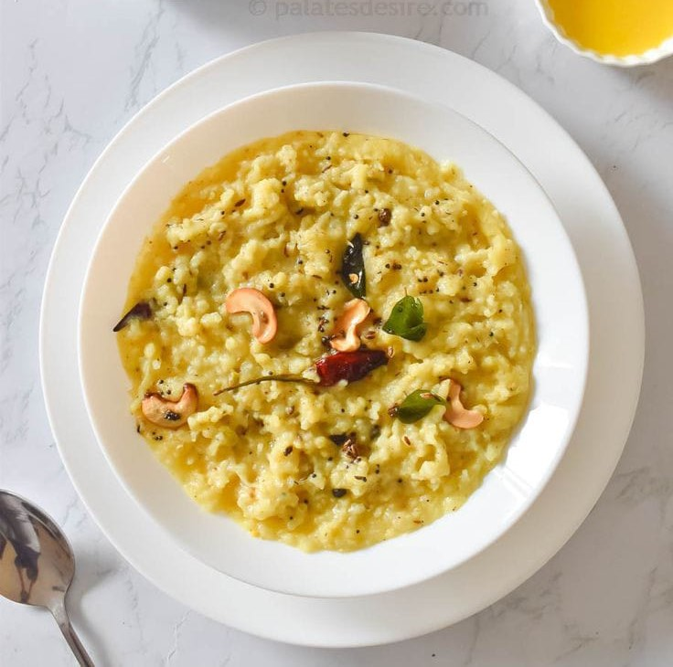

HOME
ABOUT US
SERVICES
SOUTH
NORTH
CHINESE
SNACKS
DESSERTS
CONTACT

Pongal
Sweet Pongal is a traditional Pongal dish made with rice, lentils, jaggery, and ghee.
Ingredients
1 cup rice
1/2 cup moong dal
1/2 teaspoon turmeric powder
1 teaspoon salt
1 tablespoon ghee
1/2 teaspoon mustard seeds
1/2 teaspoon cumin seeds
1/4 teaspoon asafoetida
1 sprig curry leaves
Instructions
Wash the rice and moong dal thoroughly and soak them in separate bowls for at least 6 hours, or overnight.
Drain the rice and moong dal and add them to a pressure cooker
Add 3 cups of water and the turmeric powder.
Close the pressure cooker and cook for 3-4 whistles.
Let the pressure release naturally.
Heat the ghee in a pan over medium heat.
Add the mustard seeds, cumin seeds, and asafoetida.
Once the mustard seeds splutter, add the curry leaves
Fry for a minute, then add the cooked rice and moong dal mixture
Add the salt and mix well.
Cook for 2-3 minutes, or until the pongal is heated through.
Garnish with grated coconut and serve hot with sambar and chutney.
Tips:
For a richer flavor, you can use milk instead of water.
You can also add other vegetables to the pongal, such as carrots, peas, or cauliflower.
If you don't have a pressure cooker, you can cook the rice and moong dal in a pot over medium heat for 20-30 minutes, or until they are soft and cooked through.